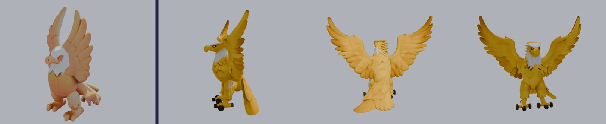
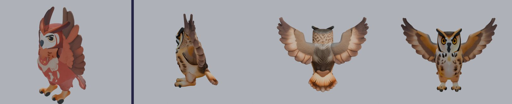
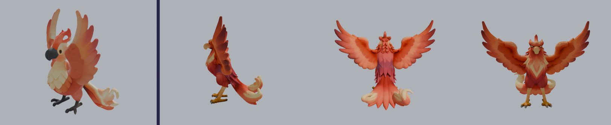
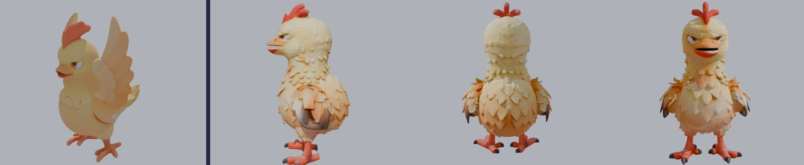

Oiseaux refaits
Même méthode : une seule queue au centre, yeux en amande, chacun vérifié de dos. Les oiseaux qui volent ont les ailes grandes ouvertes (ils sont toujours en vol dans le jeu) ; le Pingouin et le Poussin restent au sol, ailes au repos. Sur chaque image : à gauche l'actuel, puis le nouveau de profil, de dos et de face.







